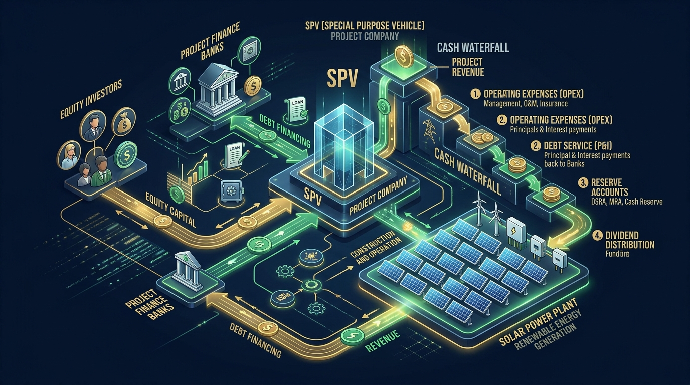

金融ストラクチャーと資金の流れ
メガソーラー事業は、巨額の初期投資（数十億〜数百億円）を自己資金（出資金：エクイティ）と銀行借入（融資：デット）を組み合わせて調達し、20年の売電収入から元利金を返済して残余利益を出資者に分配する金融ビジネスです。
太陽光プロジェクトファイナンスの立体相関図
SPVを中心に、投資家出資・銀行融資・売電収入・キャッシュウォーターフォールが連動する仕組み

発電事業のみを行う箱（資産保有主体）。親会社の倒産リスクから資産を隔離する「倒産隔離」を実現。
匿名組合契約により事業資金の10〜25%を出資。事業リスクを最も負う分、高いリターン（IRR）を狙う。
資金の75〜90%をプロジェクトファイナンスで融資。発電資産や売電債権に第一順位の担保を設定。
SPVから委託を受け、予算策定・O&M管理・決算・レンダー報告・コベナンツ遵守・投資家配当を一括統括。
GK-TKスキームの法的・税務的仕組み
日本のインフラファンドや再エネ投資で最も広く使われるのが「GK-TKスキーム（合同会社−匿名組合）」です。なぜ株式会社ではなくこの形が選ばれるのか、その理由と関係性を図解します。
GK-TK 関係相関図（契約と資金の流れ）
「倒産隔離」と「導管性（二重課税の回避）」を両立させる洗練された仕組み
キャッシュウォーターフォール（資金分配の優先順位）
プロジェクトファイナンスの基本ルールは、「お金を使う順番を融資契約で完全に縛る」ことです。売電収入はSPVの自由にはならず、以下のステップ順に機械的に配分されます。
日照不足や機器故障、出力制御によって発電量が想定より落ち、DSCRが契約上の基準値（例：1.15倍）を下回ると、投資家への配当は即座にストップされ、資金は口座内に強制留保されます。AMにとって「ロックアップを起こさない運用」は至上命題です。
【実務ツール】収支・DSCR・IRR リアルタイムシミュレーター
発電規模、売電単価、借入条件、発電量の変動を入力すると、年間売電収入、返済額、DSCR（安全度）、投資家配当利回りを瞬時に計算します。現場や会議での試算にご活用ください。
Solar Financial Modeling Simulator
スライダーを動かすと、リアルタイムで収支と財務指標が再計算されます。
コベナンツ管理とレンダー対応実務
プロジェクトファイナンス融資契約（ローンアグリーメント）には、事業者が守るべき約束事（コベナンツ）が数十条にわたり定められています。
| コベナンツ分類 | 主な約束事項 | 違反時のペナルティ |
|---|---|---|
| 財務制限条項（DSCR） | 単年度および過去実績のDSCRが一定水準（例：1.10〜1.15倍）を下回らないこと。 | 配当の停止（ロックアップ）、積立金の追加拠出、期限の利益喪失（デフォルト）。 |
| 追加借入・担保の禁止 | レンダーの事前書面承諾なく、新たな借入や第三者への担保提供を行ってはならない。 | 契約違反による一括繰り上げ返済請求の事由。 |
| 主要契約の維持・変更禁止 | EPC契約、O&M契約、地上権契約、保険契約を一方的に変更・解除してはならない。 | 契約上の地位の回復請求、是正要求。 |
| 報告義務（情報提供） | 月次発電レポート（翌月15日等）、四半期財務諸表、年次監査報告書、事故発生時の即時通知。 | 怠るとコベナンツ違反通知が発行され、融資関係が悪化。 |
インフラファンド・税務とバリュエーション
太陽光設備は巨額の減価償却費（非現金支出）が発生します。会計上の利益は小さくても手元キャッシュは豊富に残るため、出資の払戻し（利益超過分配）として非課税で投資家に還元できます。
上場インフラファンド（投資法人）やGK-TKスキームでは、配当可能利益の90%超を分配するなどの要件を満たすことで、法人税を実質非課税にして投資家へパス・スルーします。
セカンダリー市場での売買価格は「将来20年の純キャッシュフローを割引率（WACC: 4〜6%等）で割り引いた現在価値」で決まります。PR改善やOPEX削減は売却価格（バリュエーション）を直接引き上げます。
AM金融実務のチェックリスト
- 自社案件のローン契約書（LMA）に記載されたDSCRトリガー水準（ロックアップ値・デフォルト値）を暗記しているか
- 月次・四半期ごとのレンダー向けレポーティング期限をカレンダー管理しているか
- DSRA（返済積立）口座の残高が、次回元利金返済額の6か月分を常に維持しているか
- 天候不良や出力制御発生時に、DSCRがどう推移するかシミュレーションできているか
- FIT期間終了後（卒FIT）の売電計画（コーポレートPPA移行や蓄電池併設）をモデルに織り込んでいるか